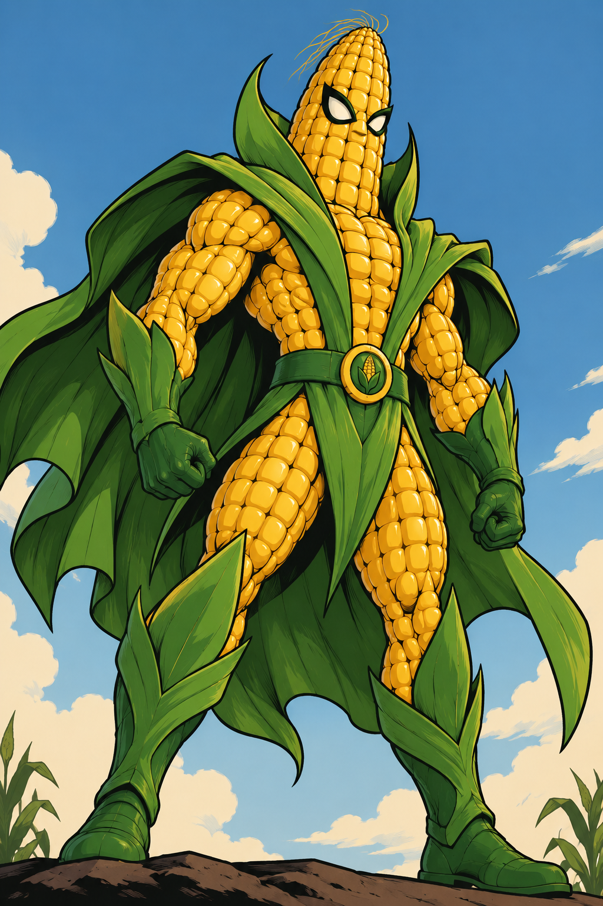

- Superhero Name
- Cobb
- He is named Cobb because he is literally a giant ear of corn.
- Alternate Identity
- Cornelius Cobb III
- Farmer during the day.
- (Superhero when trouble strikes.)
- Costume and Appearance
- Cobb is a giant walking ear of corn!
- His superhero outfit includes:
- Green husks that act like a cape.
- Green boots and gloves (also husk).
- A belt with a corn symbol on it.
- Powers
- Popcorn Blast
- Shoots popcorn from his hands.
- Can fire individual pieces or a huge burst.
- Corn Growth
- Can instantly grow corn stalks.
- Uses them to trap enemies or create barriers.
- Husk Shield
- Husks instinctively reposition to protect him.
- Husks are strong enough to block bullets and other projectiles. s
- Super Strength
- Can lift heavy objects with ease.
- Has incredible durability.
- Popcorn Blast
- Weaknesses
- Extreme heat.
- Drought.
- Butter makes him slippery.